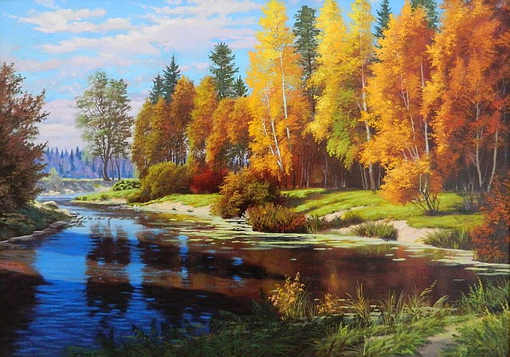

Весна является замечательным сезоном года. Весной природа оживает. Все вокруг становиться ярким зеленым и привлекательным. Солнышко освещает землю и согревает все живое вокруг. Прекрасно выглядит весной лес. Все деревья начинают весной оживать. Трава зеленеет, и становиться сочной. Насыщенный цвет зелени поднимает настроение. Когда деревья начинают цвести хочется наблюдать за этим природным явлением круглосуточно. В лесу стоит стойкий цветочный аромат. В траве также появляются первые цветы. Жители леса с приходом весны также начинают оживать. На соснах появляются белки, птички красиво поют свои трели и вьют гнезда на деревьях. В воздухе слышен запах весны. Хочется гулять по весеннему лесу и наслаждаться красивой природой. Весной могут бежать первые ручьи, солнышко, согревая замерзший лед, образует звонкую капель. Природа начинает быстрое обновление и с каждым днем выглядит все красивее и красивее. Поздней весной в лесу много людей. Все приезжают наслаждаться природой, дышать свежим воздухом, гулять и устраивать пикники. Поздней весной уже можно оставаться в лесу с ночевкой. Сидеть у костра всегда приятно наслаждаясь красивым пейзажем и спокойной обстановкой.